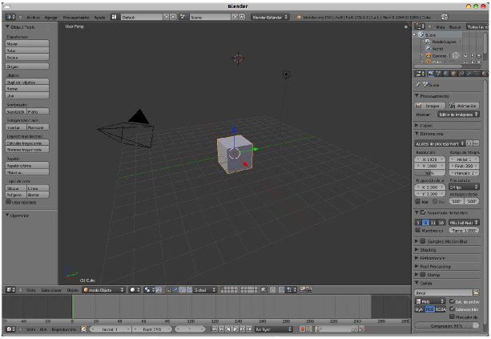

Conceptos fundamentales (I)
Blender nació como una herramienta de trabajo interna dentro de la empresa NeoGeo. Este tipo de software se caracterizan por no cuidar la parte estética e incluso a veces la distribución de herramientas es anárquica (se sitúan donde más útiles son y no dónde dice la lógica; incluso se duplican para que aparezcan en más de un lugar y así ahorrar trabajo al diseñador). A este tipo de estética se la denomina in house y Blender padeció esta mala herencia hasta la versión 2.49b.
Sin embargo Blender Foundation comienza a atajar este problema en 2007 y decide invertir el tiempo que sea necesario para diseñar una nueva interfaz, a la vez que se modifican cientos de asuntos a nivel interno. En 2011 se libera la versión 2.60 con todo un arsenal de novedades y un aspecto estético verdaderamente a la altura.
¿Por qué crees que se le dio tanta importancia al aspecto estético de Blender?